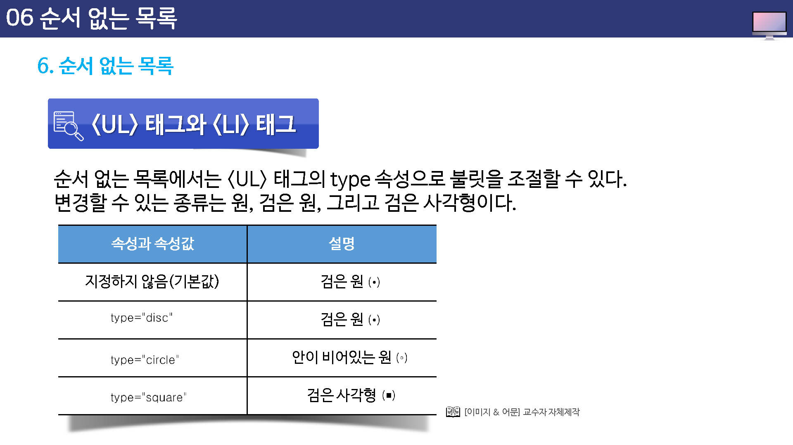
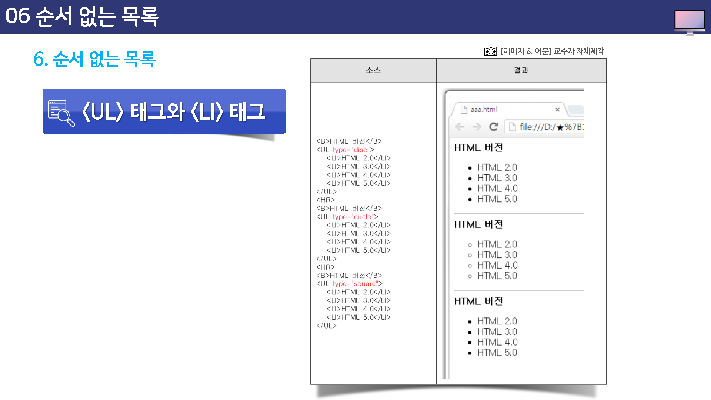

순서 없는 목록
순서 없는 목록(Unordered List)은 항목들의 순서가 중요하지 않을 때 사용한다.
즉, 항목 앞에 번호가 붙지 않고 작은 원이나 사격형을 붙여서 표시한다. 이렇게 항목 앞에 붙는 작은 그림을 블릿(bullet)이라고 한다.

UL테그와 LI태그
순서 없는 목록을 만들 때 사용하는 태그는 <ul>과 <li>이다.
목록으로 표시할 내용의 앞 뒤에 <ul>과 </ul>태그를 적고 각 항목 앞에 <li>태그를 붙이면 된다.
<li>태그의 닫는 태그, 즉 </li>는 생략할 수 있는데 이를 생략할 경우 <li>뒤부터 다음 <li>이전 까지가 하나의 항목이 된다.
<ul>
<li>항목1</li>
<li>항목2</li>
<li>항목3</li>
</ul>
순서 없는 목록에서는 <ul>태그의 type 속성으로 불릿을 조절할 수 있다.
변경할 수 있는 종류는 원, 검은 원, 그리고 검은 사각형이다.
지정하지 않는 경우 검은 원이 표시됩니다.
- type=”disc”
- type=”circle”
- type=”square”

